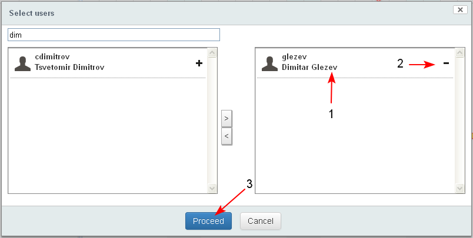
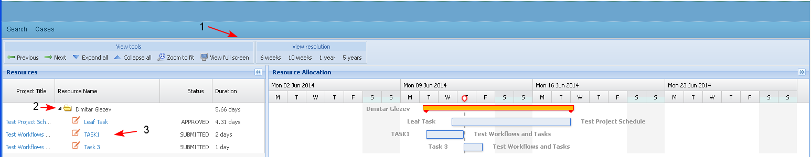
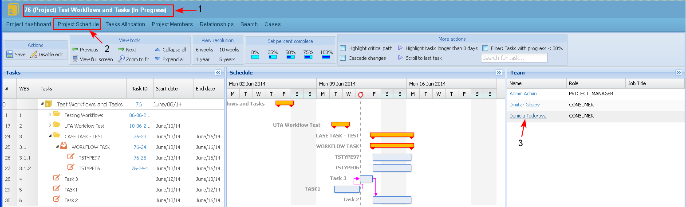
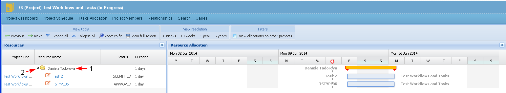
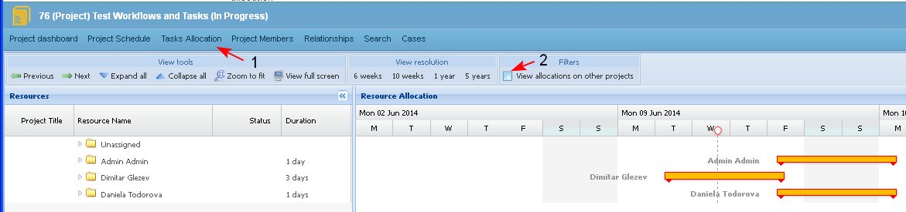

This topic describes a special view on tasks for users. For each user all tasks scheduled for him/ her and the planned working hours per tasks could be reviewed.
Task Allocation for users
The filter is accessible from the main menu.
User based filters
- "View allocation of all users" - on the time allocation view will be listed allocated task per all system users.
- "View allocation for selected users" - on the time allocation view will be listed allocated tasks only for the selected users.
- The user selects in the main menu Task Allocation/ View allocation for all users (1-2).
- The system opens the resource allocation view for all users (3).
- By default the information on tasks per resource in "Time Allocation" view is collapsed and user could expand it for selected (4) or all users.
- There is one section which shows "Unassigned tasks". The section is collapsed by default and in it are listed all unassigned tasks.
- By default the Gantt chart is visible. The Gantt chart view could be hidden or visible.

- The user selects in the main menu Task Allocation/ View allocation for selected users (1-2).

- The system opens the screen for selecting users (1). The user enters in the search field part of the name of an user (2) and the users corresponding to the search criteria appear in the list.
- The user chooses the "+" (3) button of the user whose task allocation to be displayed. Many users may be selected.
- Buttons ">" (4) and "<" (5) move the whole list of users in the left/ right section.

- The name of the selected user is moved in the right part of the table (1). There is a button "-" (2) for deselecting an user from the list.
- The user clicks "Proceed" (3).

- The system opens the resource allocation view for the selected user/s (1-2-3).

- The user selects in the resource view section (Team) of the project schedule (1-2) a resource name (3)

- The "Time Allocation" screen is opened only with task information for the selected user (1-2) in the current project.
- (Not Ready) The button "Show allocation on all projects" must be selected in order tasks from other projects assigned to the same user to be displayed. (only tasks in the time frame of the current project will be displayed).

Tasks Allocation in Project
- In the Project Schedule / Project dashboard the user selects tab "Tasks Allocation".

- A special view is opened where all tasks assigned to each user are listed:
- By default on the "Time allocation" view are listed only tasks per resources from the current project.
- For each task in the Resources section (1) there is information about: Project ID, Task name, Status and Task ID. The tasks are listed below the name of the user (3-4).
- Next to each users name is shown the total number of working hours he/ she is estimated to work on the project (5) - this is the sum of all tasks durations.
- Next to each task is shown the total number of working hours the user is estimated to work on it (6) - the task duration field.
- In a Gantt chart (2) view next to each task is shown:
- the task duration bar (7)
- the name of the task is displayed on the left of the duration bar and the name of the project is on the right
- the task duration bar (7)

Project based filters
In the "Task allocation" view (1) there are two filters selectable by checking the check box (2):
- The check box is not checked. Filter "View allocation on current project" is activated by default and only tasks per resources from the current project are listed.
- (Not Ready) The check box is checked. Filter "View allocations on other projects" is activated and then for each user would be listed tasks, assigned to him/her in other projects, but only in the time frame of the current project. The tasks from other projects are colored (styled) differently so to be distinguished easily.
